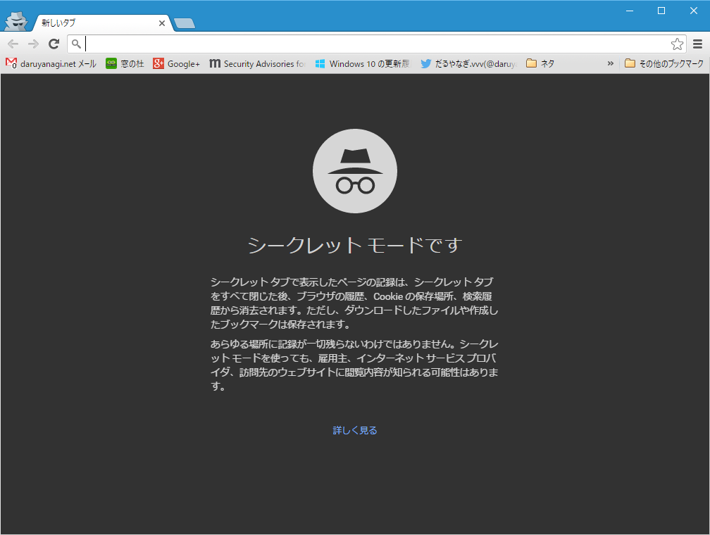

Google Chrome 51 のシークレット モード
公開日：

あんまり利用しない機能なので気が付かなかったけど、ちょっとデザインが変わってた。
シークレット タブで表示したページの記録は、シークレット タブをすべて閉じた後、ブラウザの履歴、Cookie の保存場所、検索履歴から消去されます。ただし、ダウンロードしたファイルや作成したブックマークは保存されます。
あらゆる場所に記録が一切残らないわけではありません。シークレット モードを使っても、雇用主、インターネット サービス プロバイダ、訪問先のウェブサイトに閲覧内容が知られる可能性はあります。
説明も少し丁寧で、わかりやすいものになっているのかな。いかんせん、以前のものを覚えていないのデ。
あと、中身もいろいろ変わってるみたい。
画面外レンダリングのオーバーヘッド削減
最近の一般的なウェブサイトには、ビデオ、ソーシャル ウィジェット、広告などのオリジンを跨いだコンテンツが埋め込まれています。こういったリソースを埋め込むことによって魅力的なコンテンツを提供できる一方、これによって大きなオーバーヘッドが発生し、ページ側からは制御できない不自然な動作が起きることがあります。最新バージョンの Chrome では、画面外のレンダリング パイプラインは実行されず、画面外にあるオリジンを跨いだフレームに対する requestAnimationFrame() コールバックは呼び出されません。これによって、不要な動作が削減されます。いくつかの人気モバイルサイトでは、ユーザーの使い勝手に影響を与えることなく、最大 30% の消費電力を節約できるようになります。
Google Developers Japan: Chrome 51：Credential Management API と画面外レンダリングのオーバーヘッド削減
アップデートしてから妙に重いのは、拡張機能のせいかな？ 調べるのめんどくさいので放置しているけれど、そろそろ我慢できないので暇を見つけて取り組まねば。